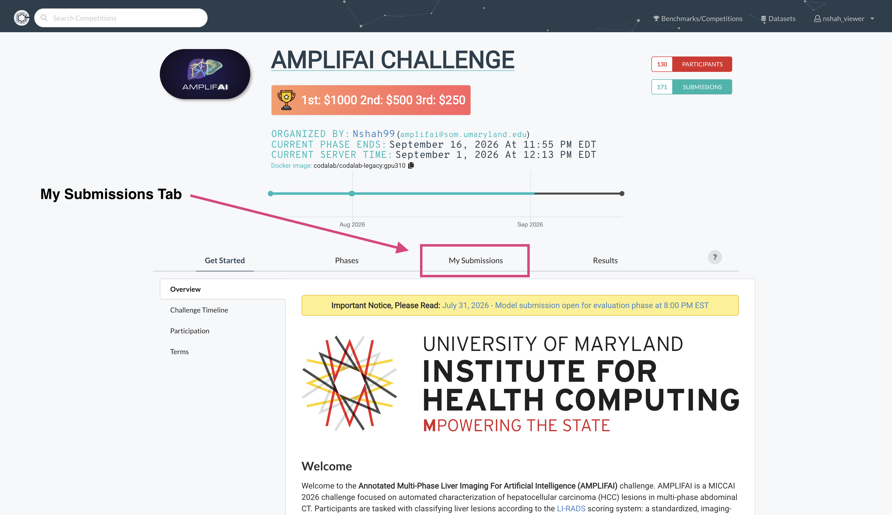
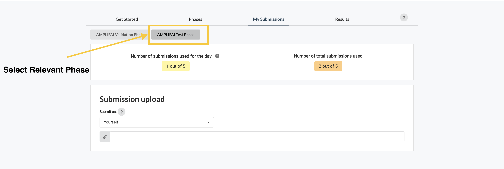
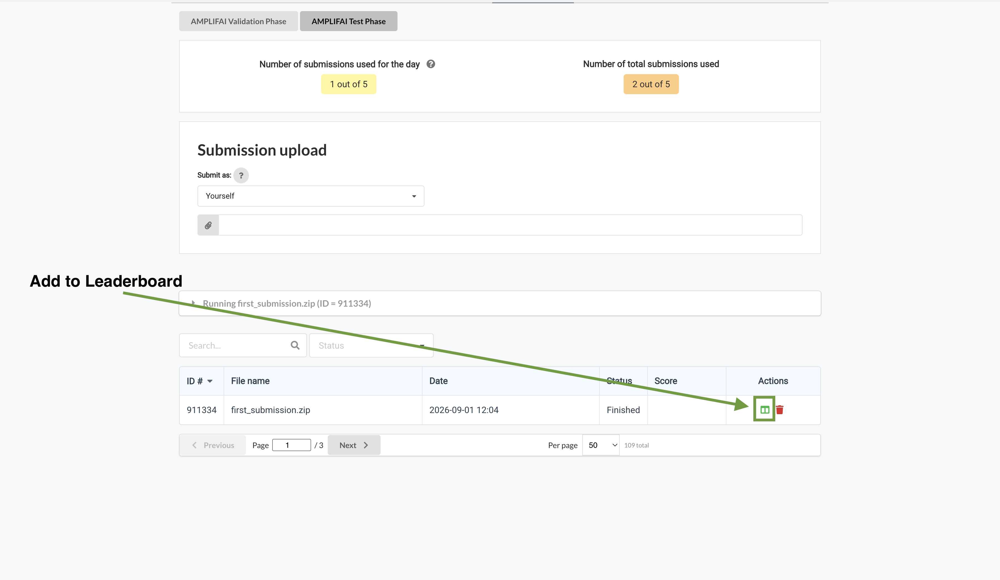

Frequently asked questions
Answers to common questions about model inputs, submissions, and participation in the AMPLIFAI challenge. For official announcements, see the Communications page.
Model inputs & submissions
No. At inference time, the intended inputs are the multi-phase computed tomography (CT) volume and the lesion segmentation only. The task is to characterize a provided lesion on multi-phase CT.
Yes. For development submissions evaluated on the public validation cases, you may bundle the publicly released feature masks and metadata in your submission archive. Please be mindful of submission size limits: Codabench enforces a 7 GB limit on competition submissions.
Yes. Models should be designed, trained, and locally validated so that at inference time they take only multi-phase CT volumes and the supporting lesion segmentation as input, matching the current Codabench evaluation environment.
Yes. The validation and test phases run the same evaluation framework. The only difference is the underlying cases: the test phase uses a held-out private test set. The input format is unchanged - multi-phase CT volumes and a lesion segmentation for each case.
Yes. Feature-level annotations are provided for training supervision only. They are not supplied as inference-time inputs on Codabench. See also the Data page and Starter kit for dataset and submission details.
Codabench & evaluation
After a submission finishes running on Codabench, you still need to add it to the leaderboard manually. Only submissions with status Finished can be added.
-
Open the My Submissions tab on the AMPLIFAI competition page.

-
Choose the relevant phase, such as AMPLIFAI Test Phase or AMPLIFAI Validation Phase.

-
In the submissions table, find your finished run and click the green table icon in the Actions column to add it to the leaderboard.

After adding a submission, check the Results tab to confirm it appears on the leaderboard.
The Codabench validation phase closed on July 31, 2026, when the evaluation (test) phase opened. New validation-phase submissions are no longer accepted. See the July 31 announcement and the Timeline for details.
You can reproduce validation-phase evaluation on your own machine using the public validation cases and the same tooling Codabench uses:
- Download the AMPLIFAI dataset from Hugging Face.
-
Build the Docker container used for evaluation:
codalab/codalab-legacy:gpu310(see codalab/codalab-dockers). - Use the official evaluation script from the submission template and guide on GitHub.
- Ingest the evaluation script and the demarcated validation-set cases.
- Ingest your model and evaluate performance.
For step-by-step setup, see the Starter kit and the Data page.
Getting help
Email the AMPLIFAI organizers at amplifai@som.umaryland.edu. Include your team name and a clear description of your question. For dataset access, download, or registration issues, use the same address.
Start with the Starter kit on this site. For a reference implementation and packaging layout, see the submission sample on GitHub. Submit models through the AMPLIFAI competition on Codabench.
Contact
Questions not covered here? Reach out to the organizing team and we will get back to you as soon as we can.